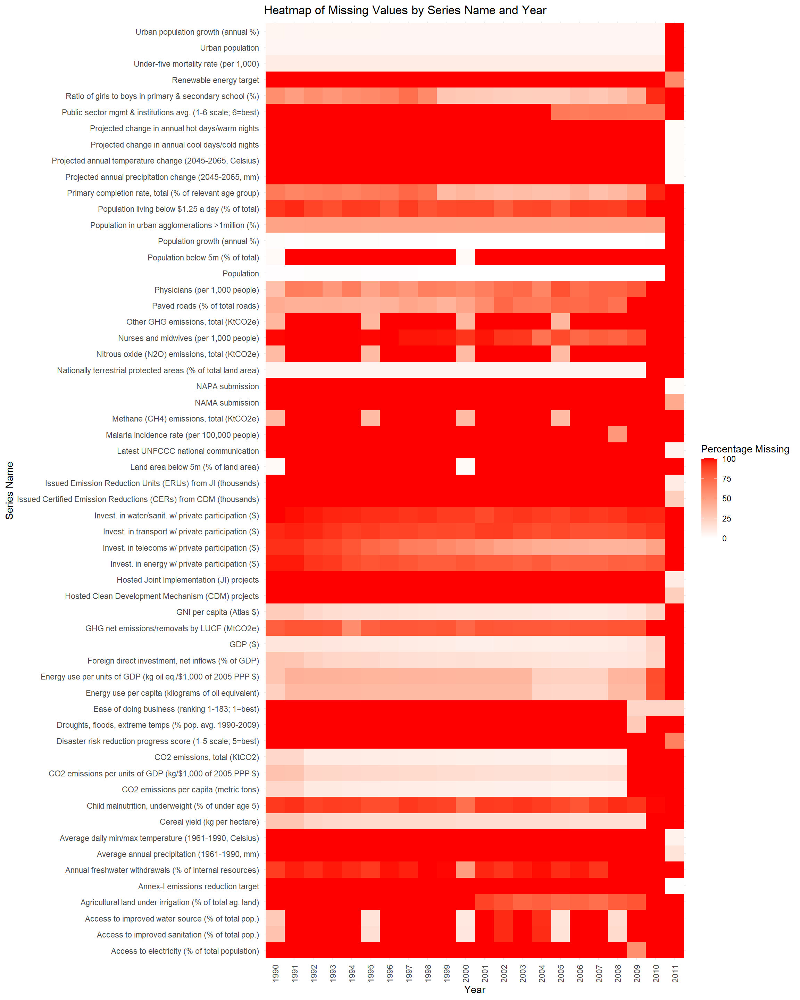

For this research project, we will utilize data sourced from the World Bank’s Climate Change Data catalog. The World Bank, as a reputable international financial institution, collects and disseminates this data under its Open Data Policy, ensuring a high standard of reliability and accuracy. The World Bank’s Climate Change Data is publicly available under the Access to Information Classification Policy and is licensed under Creative Commons Attribution 4.0. Related links include more specific data like the Climate Change Indicators and the Climate Change Knowledge Portal.
The data is disseminated by the World Bank under its Open Data Policy.The data can be downloaded in XLS format. We plan to save sheet 1, the data sheet first, as a .csv file and import it using R-studio. The dataset, sourced from an Excel file titled “climate_change_download_0.xls”, comprises three distinct sheets: “Data”, “Country”, and “Series”. Each sheet contributes unique information essential for the comprehensive analysis of climate change-related data.
The datasheet, named “Data”, includes columns for country codes, names, series codes, and names, along with yearly data. The dataset consists of 13,512 entries and 28 columns. Each row represents a different country-series combination, with columns for the country code, country name, series code, series name, scale, and decimals. The data spans from the year 1990 to 2011, with each year represented as a separate column. This sheet provides a comprehensive time-series dataset with multiple variables across various countries. The presence of numerous missing values indicates a need for careful data cleaning and handling strategies, such as imputation or exclusion of incomplete records, depending on the research objective.
The country sheet, naned “Country Sheet” is a supplementary sheet provides additional information about each country, including the capital city, region, and income group. Example column names are: ‘Series code’, ‘Series name’, ‘Scale’, ‘Decimals’, ‘Order’, ‘Topic’, ‘Definition’, ‘Source’. It offers categorical data that can assist in grouping or filtering the main dataset. It has aggregated regions and income groups rather than individual countries, suggesting it provides a broader context for the data.
The Series sheet, contains detailed descriptions of the series or variables in the main dataset, including series codes, names, scales, definitions, and sources. It has 58 rows and 8 columns. Columns include: Series code’, ‘Series name’, ‘Scale’, ‘Decimals’, ‘Order’, ‘Topic’, ‘Definition’, ‘Source’. The series sheet is vital for understanding the metrics used in the dataset. It offers clarity on the variables, their measurement scales, and sources, which is essential for accurate data interpretation and analysis.
The structure suggests a focus on time-series data for various climate-related metrics. It has dimensions and frequency, as the sheet contains longitudinal data, covering over two decades. The exact dimensions (number of rows and columns) will be determined upon a detailed load of the data. Details about the frequency of updates and dimensions of the dataset are not explicitly stated on the site. However, we expect the World Bank to update their datasets regularly to reflect the most current information available. We do see that we have data for each year from 1990 - 2011 increasing every year.
2.2 Research Plan
The dataset will enable the research project to delve into various aspects of climate change over a period of two decades (1990-2011). The “Data” sheet provides the core quantitative information, which, when combined with the country-specific context from the “Country” sheet and the variable descriptions in the “Series” sheet, will offer a comprehensive view for analyzing climate change trends, impacts, and regional differences. The research questions outlined in the introduction will be addressed through a mix of trend analysis, comparative studies between regions and income groups, and correlational studies between different climate variables.
For example, our prelimary research question is:“How have greenhouse gas emissions (GHG) or CO2 trends varied across different income groups and regions from 1990 to 2011?”This question shifts the focus to greenhouse gas emissions, a critical factor contributing to climate change. It’s pertinent because GHG emissions are a primary driver of global warming and understanding their trends across different income groups and regions is crucial for policy-making and targeted climate action.
Using the ‘Data’ Sheet: Assuming this sheet includes GHG emissions data, it can be analyzed to observe trends over the years. The focus would be on the relevant series codes that represent various types of greenhouse gas emissions (like CO2, methane, etc.). By combining this with the country-specific information, such as income groups and regions, the analysis can compare emissions trends across these different categories. This approach allows for an investigation into whether higher-income countries contribute more significantly to GHG emissions compared to lower-income ones, and how different regions contribute to global emissions. Referencing the ‘Series’ Sheet for Clarity: This sheet will provide precise definitions and methodologies used for calculating GHG emissions, ensuring an accurate understanding and interpretation of the data.
Methodological Approach: Trend Analysis: We can measure and graph the changes in GHG emissions for each country over the period. This will illustrate how emissions have evolved. Comparative Analysis: We can perform a comparative study to evaluate how emissions differ across income groups and regions. This might reveal whether certain economic or geographic groups have historically been larger contributors to GHG emissions. Statistical Testing: Use can use appropriate statistical methods to assess the significance of observed trends and differences between groups. Visualization: Utilize charts and possibly geographic heat maps to visualize emissions trends globally, highlighting regions with the highest and lowest emissions.
The research is expected to provide a detailed understanding of GHG/CO2 emissions trends, highlighting disparities based on economic and geographical factors. This can inform global climate policy, especially in addressing the contributions and responsibilities of different regions and income groups in tackling climate change.
2.3 Missing value analysis
For the datasheet, which is the primary data we will use to analyze, preliminary inspection reveals a significant presence of missing values, denoted by “..”, which needs careful handling in analysis. For the country sheet, initial inspection doesn’t reveal major issues, but a thorough examination is needed to ensure consistency and completeness. For the series sheet, ensuring that series codes correspond between this and the data sheet is crucial for accurate data interpretation.
We further inspect the data sheet, which is most important for our research. Consistent Missing Values Across Years (1990-2010): Each year from 1990 to 2010 has exactly 3,495 missing values. Significant missing values are present in yearly data columns, ranging from 3,495 missing values per year (for most years) to 1,130 missing values for the year 2011. This pattern suggests a systematic issue with data collection or availability during this period. The number of missing values decreases to 1,130 in 2011, indicating an improvement in data collection. Some countries have consistent missing values across all years, which may indicate a lack of data reporting or collection for specific countries. For example, Afghanistan and Albania each have 15 missing values per year from 1990 to 2010 and 3 to 4 missing values in 2011. Different series (data types) also show varying levels of missing data. For example, the series “Annex-I emissions reduction target” consistently has 233 missing values each year from 1990 to 2010 and 190 missing values in 2011. This suggests that some data types are more consistently reported than others.
Overall, the missing values appear to be influenced both by the type of data being reported (series) and the country reporting it. The consistency in missing values over the years and the reduction in 2011 are notable patterns. This information could be crucial for data cleaning, imputation strategies, or even for understanding the reliability of certain types of data within this data set.
The following objects are masked from 'package:stats':
filter, lag
The following objects are masked from 'package:base':
intersect, setdiff, setequal, union
Code
library(tidyr)library(ggplot2)# Assuming the data is already loaded into a data frame called `data`# And assuming '..' is used to represent missing values in your dataset# Replace '..' with actual NA valuesdata <- data %>%mutate(across(`1990`:`2011`, ~na_if(.x, "..")))# Calculate the percentage of missing values per yearmissing_data_percentage <- data %>%select(`1990`:`2011`) %>%summarise(across(everything(), ~sum(is.na(.)) /n() *100, # Calculate percentage.names ="perc_missing_{.col}")) # Rename the columns# Convert the data from wide to long format for plottingmissing_data_long <-pivot_longer(missing_data_percentage, cols =starts_with("perc_missing_"), names_to ="Year", values_to ="PercentageMissing")# Extract the year from the column names for a cleaner x-axismissing_data_long$Year <-sub("perc_missing_", "", missing_data_long$Year)# Create the bar chartggplot(missing_data_long, aes(x = Year, y = PercentageMissing)) +geom_bar(stat ="identity", fill ="blue") +theme_minimal() +labs(title ="Percentage of Missing Values by Year",x ="Year",y ="Percentage of Missing Values" ) +theme(axis.text.x =element_text(angle =90, vjust =0.5, hjust =1)) # Rotate x-axis labels for readability
The bar chart titled “Percentage of Missing Values by Year” displays the proportion of missing data points in a dataset across different years, from 1990 to 2011.
The most prominent trend is that more than 60% of our data is missing for all years. This is concerning for analysis. From 1990 to around 1996, there is a slight downward trend in the percentage of missing values. From 1996 to 2000, there is an increase in missing data, with some fluctuations. After 2000, the percentage of missing values appears to stabilize somewhat, with slight ups and downs but no clear trend until 2007. There’s a noticeable decrease in missing values in 2008, suggesting an improvement in data collection or recording for that year. In 2009, the percentage of missing values rises again before dropping in 2010. However, in 2011 there is a significant increase in missing data, indicating that the dataset’s completeness took a substantial downturn in the most recent year shown. In the context of climate change or any other analysis relying on this data, the fluctuating levels of missing data could pose challenges. The years with higher percentages of missing values may lead to less reliable conclusions due to the lack of data. For robust analysis, it’s crucial to account for these gaps, possibly through data imputation methods or by focusing on years with more complete data. The spike in missing data in 2011 is particularly concerning and would need to be addressed before any serious analysis of that year’s data.
Code
suppressWarnings({library(readxl)data <-read_excel("data/raw/sheet1.xls")})data <- data %>%mutate(across(`1990`:`2011`, ~na_if(.x, "..")))# Calculate the percentage of missing values for each Series_name and Yearmissing_data_heatmap <- data %>%select(-c(`Country code`, `Country name`, `Series code`, `SCALE`, `Decimals`)) %>%pivot_longer(cols =`1990`:`2011`, names_to ="Year", values_to ="Value") %>%mutate(is_missing =is.na(Value)) %>%group_by(`Series name`, Year) %>%summarise(PercentageMissing =sum(is_missing) /n() *100) %>%ungroup()
`summarise()` has grouped output by 'Series name'. You can override using the
`.groups` argument.
Code
# Create the heatmapggplot(missing_data_heatmap, aes(x = Year, y =`Series name`, fill = PercentageMissing)) +geom_tile() +scale_fill_gradient(low ="white", high ="red") +theme_minimal() +labs(title ="Heatmap of Missing Values by Series Name and Year",x ="Year",y ="Series Name",fill ="Percentage Missing" ) +theme(axis.text.x =element_text(angle =90, vjust =0.5, hjust =1)) # Rotate x-axis labels for readability

As you can see, we clear have very many series that have missing values over the years. We will drop a lot of these Series_name column in the preprocess.qmd.